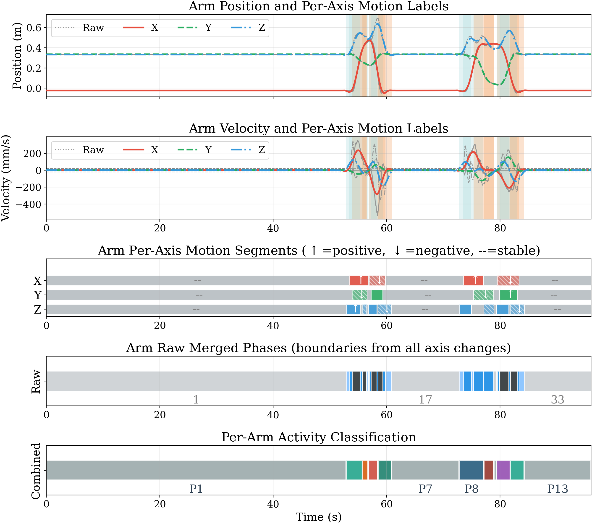
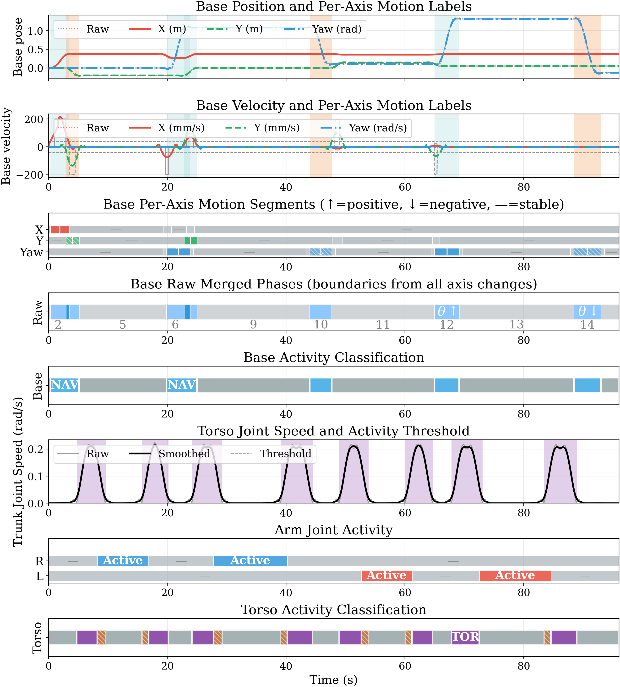
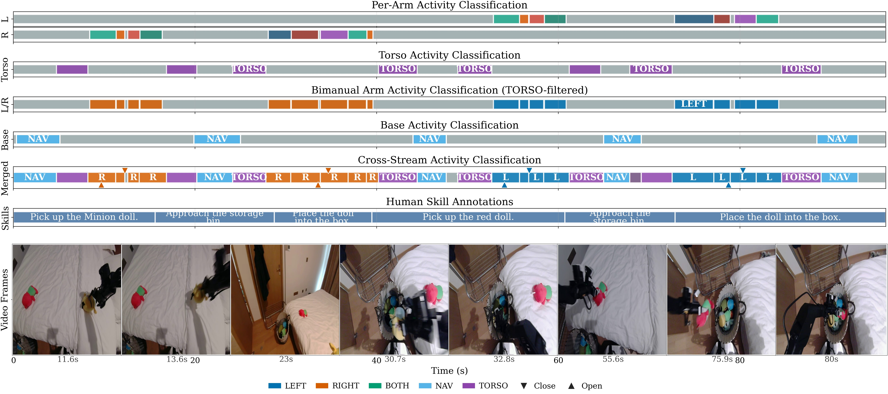
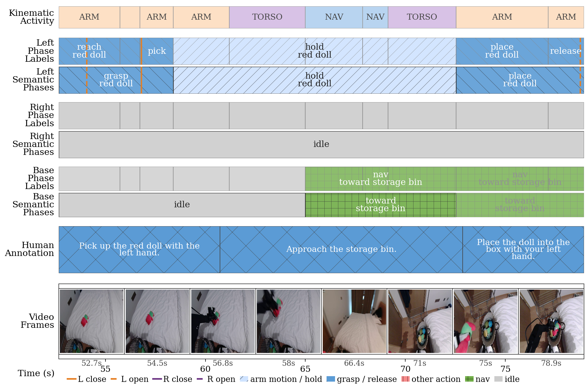
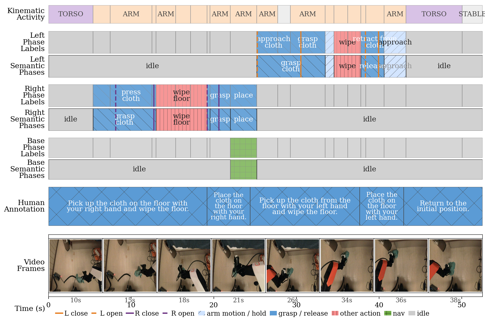
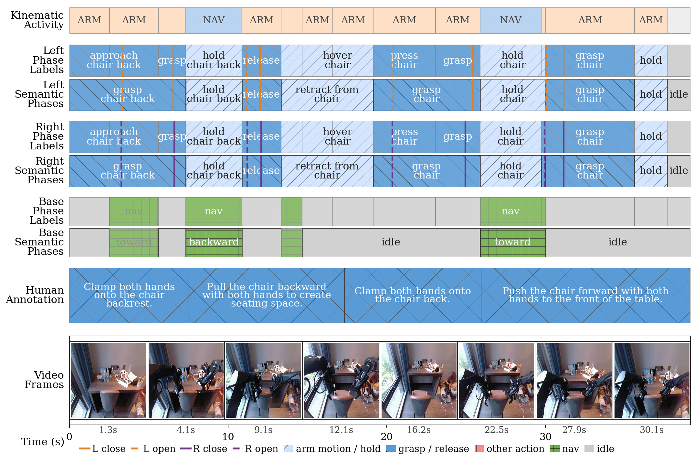
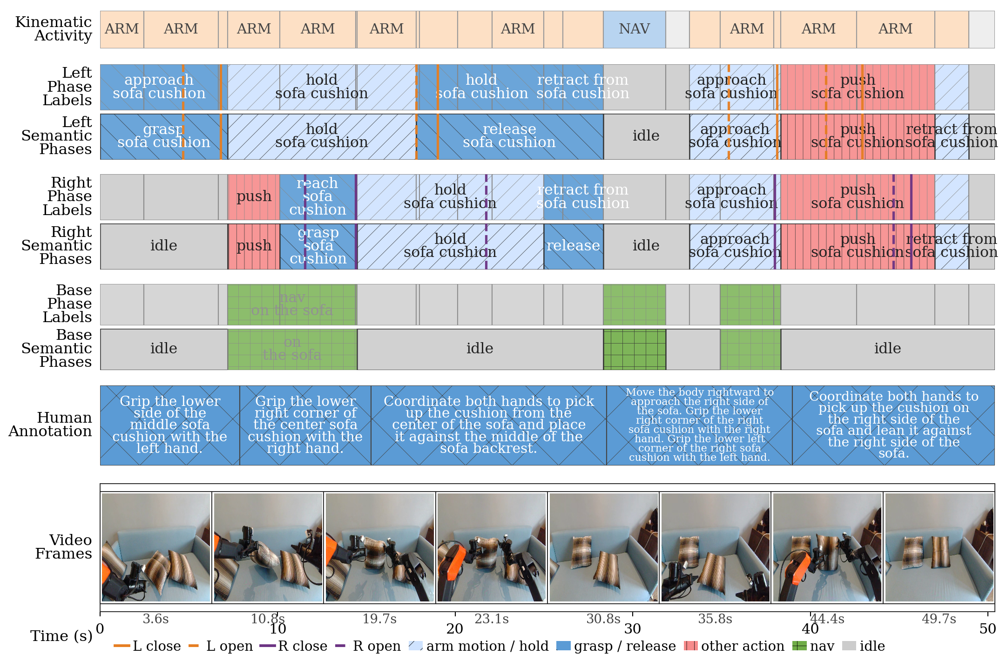
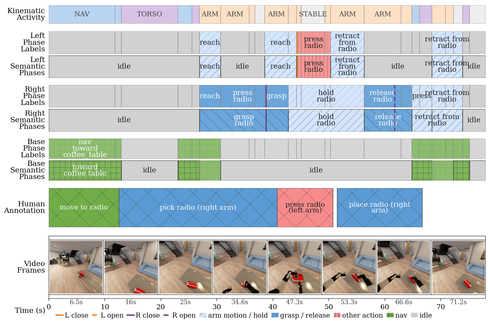

Bimanual mobile manipulation · automatic demonstration labelling
Automatic Labelling for Bimanual Mobile Manipulation
School of Computing and Data Science
The University of Hong Kong, HKSAR
A construction pipeline that combines the temporal precision of trajectory heuristics with the semantic breadth of phase-localised vision-language reasoning.
arXiv:2609.24059 · Code and project release to follow.
Overview
From trajectories to structured subtasks
Semantically meaningful subtask labels can provide useful context for long-horizon policies, but obtaining reliable temporal boundaries and broad semantic descriptions remains difficult. This work separates those responsibilities in an automatic pipeline.
Deterministic trajectory analysis first establishes activity phases from synchronised kinematic signals. Phase-localised vision-language reasoning then describes the supplied intervals, and deterministic within-stream aggregation produces semantic records for the base, left arm, and right arm while preserving their asynchronous behaviour.
Localise
Use inspectable trajectory signals to construct candidate temporal phases.
Interpret
Describe the contents of each fixed phase with VL reasoning.
Aggregate
Merge compatible descriptions independently within each physical stream.
Method
A three-stage construction path
The division of labour keeps temporal support auditable while allowing semantic descriptions to cover a broad range of interactions.
Stage 1
Kinematic trajectory segmentation
Arm motion and base/torso activity are first analysed separately. Cross-stream combination then brings these segments together with gripper events to construct the activity phases supplied to VL reasoning.






Stages 2 & 3
Phase-localised reasoning and semantic aggregation
The activity phases from Stage 1 provide fixed temporal support for semantic interpretation. The figure below shows both the initial phase descriptions and the aggregated action streams.
2. Phase-localised VL reasoning
VL reasoning describes the visible actions, targets, and events within each supplied phase, producing separate descriptions for the left arm, right arm, and base.
3. Within-stream semantic aggregation
Compatible descriptions are merged independently within each stream to form semantic action sequences while preserving asynchronous arm and base behaviour.


Experiments · Galaxea
Temporal divisions receive higher acceptance than arm labels
The Galaxea study evaluates repeatability and participant acceptance of the automatically constructed divisions and labels.
Nine participants reviewed demonstrations spanning all 29 Galaxea tasks. The acceptance gap indicates that interpreting arm actions and targets remains more challenging than identifying the temporal divisions supplied by trajectory analysis.
Acceptance rates use judgeable responses and exclude wholly idle streams for semantic questions. Temporal questions exclude clips in which all three streams are wholly idle.
Experiments · Task examples
Different interactions, independent action streams
These Galaxea examples illustrate how the pipeline describes actions across the two arms and mobile base. Expand an example to explore its timeline, or select a figure to view it at full resolution.
Floor-cloth wiping stainsGrasping, wiping, and repositioning
Kinematic phases localise grasping, wiping, release, and repositioning while the separate streams retain asynchronous arm and body activity. This task receives high participant acceptance for both timing and semantic descriptions.


Chair push and placeContact and mobile-base motion
The base stream records navigation separately from the arm's grasp–hold–release sequence. Lower participant acceptance on both timing and content shows that the difficulties in this task extend beyond semantic interpretation alone.


Arrange sofa cushionsDeformable-object manipulation
Persistent contact and small bimanual adjustments can produce several locally plausible descriptions that remain separate after aggregation. This example motivates higher-level semantic reasoning over sustained interactions.


Portability to BEHAVIOR-1K
The Turn On Radio example applies the same pipeline parameters to a simulated demonstration. Expressing duration thresholds in seconds accommodates its different recording rate.
Turn on radioBEHAVIOR-1K · Portability example


Resources
Paper and release links
@article{lu2026automatic,
title = {Automatic Labelling for Bimanual Mobile Manipulation},
author = {Yupu Lu and Jia Pan},
journal = {arXiv preprint arXiv:2609.24059},
year = {2026}
}